◾️受諾条件:レベル1350以上
◾️経験値約2600億
◾️前提クエスト
「派遣の知らせ」の連鎖クエスト「二つ目の旅路」
目次
1.沼地の向こうに ＜ 2.ウポスマイヤー北部 ＜ 3.ウポスマイヤー調査 ＜ 4.周辺モンスター退治 1 ＜ 5.ウモスクェグマイヤーに行く道 ＜ 6.倉庫の中の闇 ＜ 7.深まる疑問 ＜ 8.古代の亡霊 ＜ 9.村を覆う霧 ＜ 10.闇の中で光る星光(秘密) ＜ 11.墓地の花
1. 沼地の向こうに
| 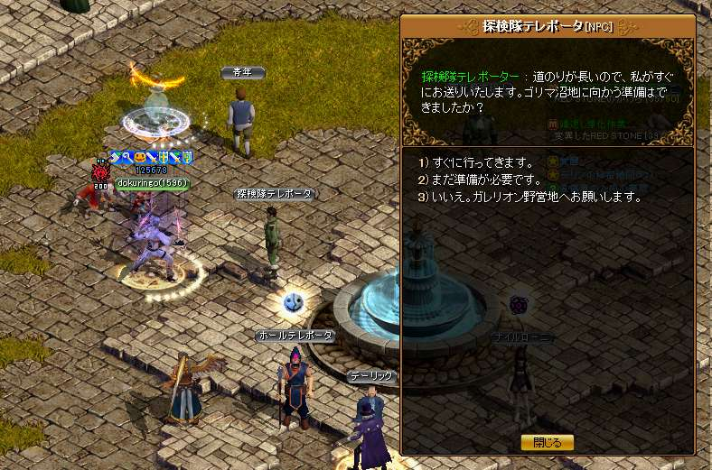 |
古都噴水横からクエスト受注 １番を押してクエスト開始 会話後【ゴリマ沼地】へ飛ばされる |
|---|---|
| 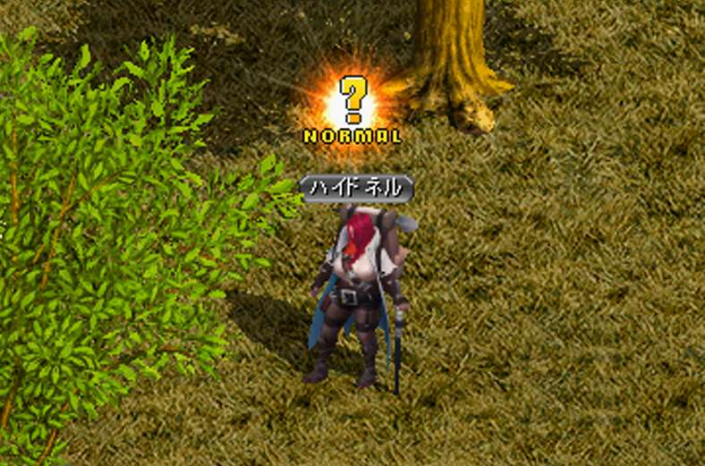 |
【ハイドネル】と話してＵＰ |
| 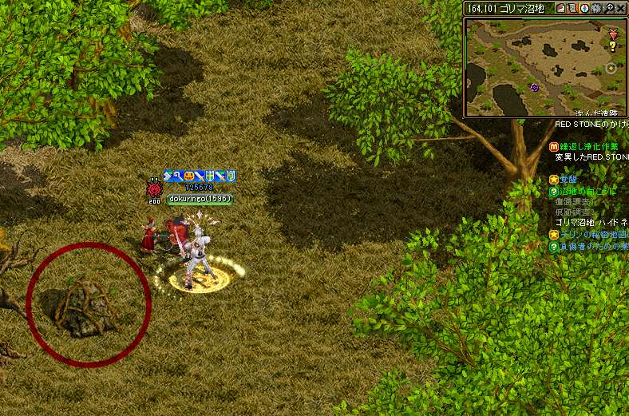 |
【164.101】の石 |
| 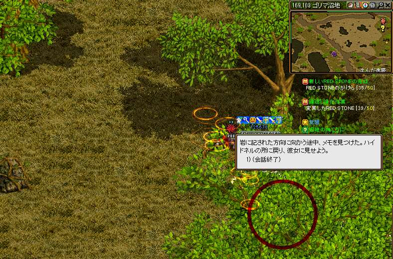 |
【169.103】の石 経験値が貰えるのでパワキを準備しよう！ 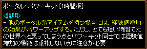 |
|
石を触ったら【ハイドネル】と話してＵＰ １番を押してクエスト開始 会話後【ウポスマイヤー北部】へ飛ばされる 経験値が貰える！ |
2. ウポスマイヤー北部
 |
【ハイドネル】と話してＵＰ 【原始人】３人に話に行く 【249.32】【234.24】【233.35】 |
|---|---|
| 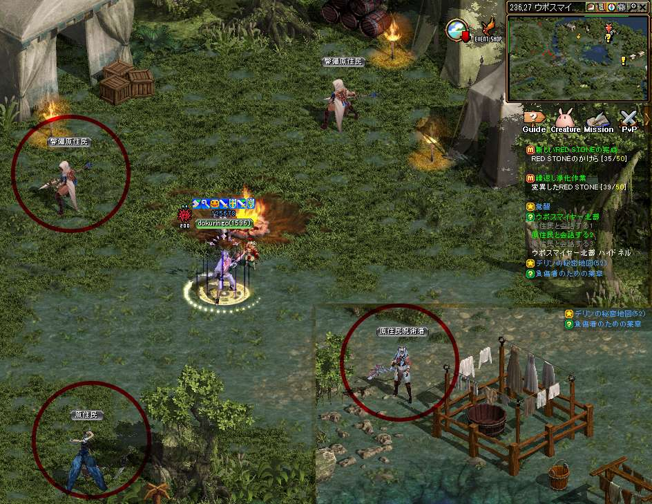 |
左の２人行く途中の【原始人】と話す |
 |
【カイリン】と話してＵＰ |
| 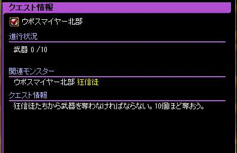 |
武器を奪いに行く 適当にＭＯＢを狩りＵＰ |
| 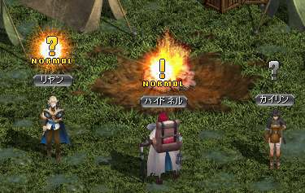 |
【リヤン】話してＵＰ 経験値が貰える！ |
3. ウポスマイヤー調査
| 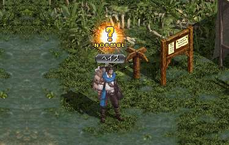 |
【ヘイズ】と話してクエスト再開 ３個、環境調査をする |
|---|---|
| 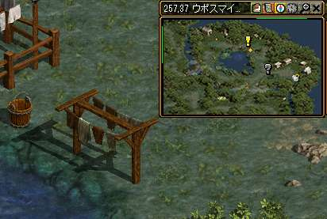 |
【257.37】洗濯物 |
| 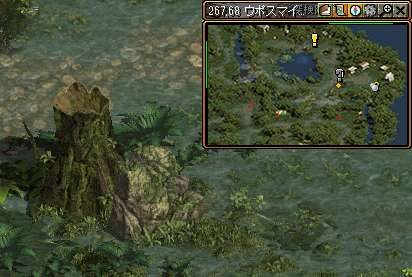 |
【267.68】切り株 |
| 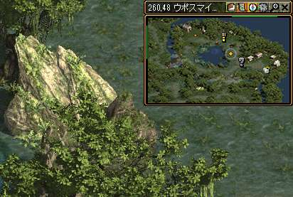 |
【260.48】岩 |
|
【ヘイズ】と話してクエストＵＰ 経験値が貰える！ |
4. 周辺モンスター退治
| 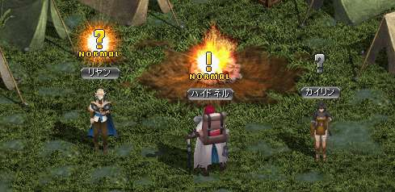 |
【ハイドネル】と話してクエスト再開 100体MOBを倒す 倒し終わったら【ハイドネル】と話してクエストＵＰ |
|---|
5. ウモスクェグマイヤーに行く道
|
【ハイドネル】と話してクエストＵＰ 【ウポスマイヤー北部】まで走る |
|
| 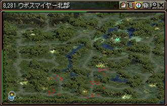 |
【286.18】の岩をクリックしてＵＰ ガイド経由で【ハイドネル】に戻る |
|
倒し終わったら【ハイドネル】と話してクエストＵＰ 経験値が貰える！ |